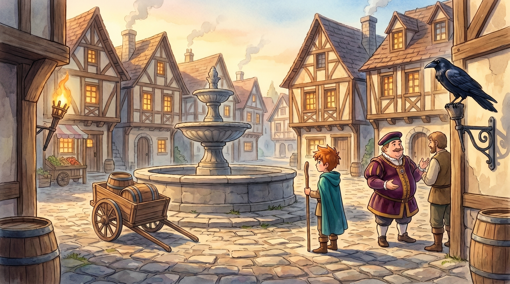

SCENE 1 · HET DORPSPLEIN
Een droge fontein
De fontein staat droog en het dorp zit zonder water. Op het plein: burgemeester Bram, een handelsman met een volle kar, en een glanzende raaf die graag ruilt.
🧩 Puzzels
- Geef de wijn aan de burgemeester → je krijgt een gouden munt + een geheime kaart naar de vallei.
- Geef de munt aan de raaf → hij kraakt het recept (drakenschub · traan · vuurvliegje) en wijst naar de molen.
- Laat een bloem dansen (dans-spreuk) → de handelsman is afgeleid → grist het molenrad uit de kar.
🎒 Figuren
- Burgemeester Bram, de handelsman, het kraammeisje, de glanzende raaf